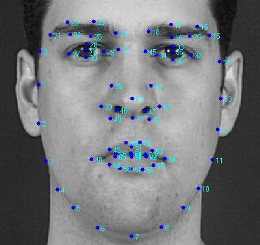

In order to manipulate faces, AI first has to understand how they work.
The 68-point landmark model is used to map important facial features in 2D space (x,y). The jaw line and bottom of the face is defined using 17 points, the eyebrows (for expression) are defined using 10 points, the eyes are defined using 12 points, the nose is defined using 9 points, and the mouth is defined using 20 points.

source
3D faces include the definition of 5,023 vertices in 3D space (FLAME).
In order to make a virtual avatar appear to be talking with accurate facial movements, each of the fifteen English visemes (unique mouth shapes corresponding to one or more sounds) need to be mapped onto the avatar.
Convolutional neural networks (CNNs) can be used to detect important facial landmarks. Such neural networks compress images by applying a filter that creates a lower resolution image by averaging out multiple pixel values to create the new pixels, making their important features stand out from less important features.